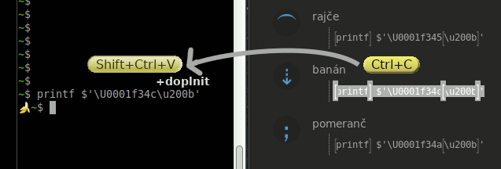

Linux: Kniha kouzel, vanilková příchuť
Projekt vede: Singularis <singularis@volny.cz>
Linux: Kniha kouzel je...
- ...okamžitě funkční kód − Ctrl+C, Shift+Ctrl+V, doplnit parametry, Enter a zaklínadlo funguje!

- ...moderní − Využívá vždy nejefektivnější nástroje dostupné v podporovaných operačních systémech, i ty málo známé.
- ...ověřená − Zaklínadla ve vydáních označených „vanilková příchuť“
byla testována na virtuálních počítačích, některá i na fyzických.
- ...v souvislostech − Namísto izolovaných řešení, jaká můžete vyhledat internetovým vyhledavačem, nabízí Linux: Kniha kouzel pro každou zpracovanou oblast pestrou paletu možností, jaké by vás nemusely napadnout.
- ...svobodná − Otevřený zdrojový kód na GitHubu s návodem k sestavení
přímo očekává, že si jej upravíte, jak budete chtít. Veškerý software potřebný k sestavení
je svobodný. Projekt na GitHubu je otevřený novým přispěvatelům.
- ...multimediální − Stejný obsah je dostupný jak v PDF podobě
optimalizované pro klasický knihtisk, tak i v elektronických formátech HTML a Markdown.
- ...modulární − Úlohy plněné zaklínadly jsou pokud možno elementární,
abyste je mohl/a efektivně kombinovat.
- ...genderově spravedlivá − Rod slova řádek/řádka se v textech
spravedlivě střídá.
- ...ortodoxně česká − Pracuje s českou lokalizací Ubuntu; kde je to možné, upřednostňuje české termíny; zdrojový kód je v rámci možností v češtině a u jakéhokoliv odkazu
vedoucího na cizojazyčnou stránku je uveden jazyk.
- ...bez záruky − Jako téměř cokoliv v Linuxu (a většina online služeb). Linux je velmi konfigurovatelný systém a příkaz, který na mém virtuálním počítači funguje, nemusí stejně fungovat na tom vašem. I mně se občas stává, že mi tentýž příkaz na jednom počítači funguje a na jiném ne.